Viajes - La web de emijrp
| Viajes | |
|---|---|
| Por región | Vuelta a Cádiz · Vuelta a Andalucía · Vuelta a España |
| Por tema | Camino de Santiago · Live cams · Los pueblos más bonitos de España · Turismo Rojo · Bibliografía |
Esta sección está dedicada a recopilar detalles de mis viajes, pequeños diarios y algunos datos curiosos.
En el mapa voy añadiendo un punto por cada lugar que he podido visitar. En España hay más de 8.000 municipios y 50 provincias así que tengo diversión para rato.
| Tabla de contenidos |
|---|
|
1. Resumen general 2. Puntos de singular interés 2.1 Ciudades y sitios UNESCO 3. Lo aprendido 4. Me gustaría visitar |
Resumen general
- Países visitados: 1 (España).
- Comunidades autónomas: 6 (Andalucía, Castilla-La Mancha, Castilla y León, Comunidad de Madrid, Cataluña y Extremadura).
- Provincias: 15 (Ávila, Barcelona, Burgos, Cáceres, Cádiz, Córdoba, Cuenca, Granada, Guadalajara, Madrid, Málaga, Segovia, Sevilla, Toledo y Valladolid).
- Municipios: 50 (Alcalá de Henares, Alcalá de los Gazules, Alcocer, Alhaurín el Grande, Aranjuez, Arcos de la Frontera, Ávila, Barcelona, Benalup-Casas Viejas, Bolonia, Bornos, Burgos, Cádiz, Cáceres, Camarma de Esteruelas, Chillaron de Cuenca, Chipiona, Córdoba, Cuenca, El Puerto de Santa María, Espera, Estepona, Granada, Guadalajara, Jerez de la Frontera, La Línea de la Concepción, Lebrija, Los Santos de la Humosa, Madrid, Málaga, Medina-Sidonia, Mesas de Asta, Nerja, Paterna de Rivera, Puerto Real, Rota, Sacedón, Salamanca, Sanlúcar de Barrameda, Santiponce, Segovia, Sevilla, Sitges, Toledo, Tomares, Torrejón de Ardoz, Trebujena, Valladolid, Vejer de la Frontera y Villar de Domingo García).
- Lugar más al Norte: Burgos (42.340659 N, 3.704412 O).
- Lugar más al Sur: Parque natural de Los Alcornocales (36.218819 N, 5.631672 O).
- Lugar más al Este: Barcelona (41.381576 N, 2.194904 E).
- Lugar más al Oeste: Chipiona (36.737781 N, 6.442138 O).
- Lugar a mayor altitud: Sierra Nevada (2100 msnm).
- Lugar a menor altitud: Cádiz (0 msnm).
- Mares y océanos: Mar Mediterráneo (Barcelona, Málaga y Estrecho de Gibraltar) y Océano Atlántico (Bahía de Cádiz).
- Municipios más poblados: Madrid (3.165.235), Barcelona (1.602.386), Sevilla (696.676), Málaga (566.913) y Córdoba (328.041).
- Municipios menos poblados: Villar de Domingo García (218), Alcocer (360), Chillaron de Cuenca (567), Mesas de Asta (600), Sacedón (1.716), Los Santos de la Humosa (2.389) y Espera (3.951).
- Parques naturales: Parque natural de Los Alcornocales.
- Ríos: Chillar, Guadalete, Guadalquivir, Guadiana, Henares, Huécar, San Pedro y Tajo.
Records relativos a distancias:
- Mayor distancia recorrida en barco: 5 km (Catamarán Bahía de Cádiz).
- Mayor distancia recorrida en coche: 648 km (Madrid-Cádiz por la A4). Ver Viajar por carretera.
- Mayor distancia recorrida en tren: 1.079 km (AVE Sevilla-Barcelona).
Puntos de singular interés
Lugares especialmente destacables.
Archivos
- Archivo General de la Guera Civil Española (Salamanca)
- Archivo General de Indias (Sevilla)
- Archivo Histórico Provincial de Cádiz
- Archivo Municipal de El Puerto de Santa María
Museos
- Biblioteca y Museo Nacional
- Museo Arqueológico Nacional
- Museo Arqueológico de Jerez
- Museo Arqueológico de Sevilla
- Museo Arqueológico Regional (Alcalá de Henares)
- Museo Cerralbo
- Museo de Artes y Costumbres Populares de Sevilla
- Museo de Cádiz
- Museo de El Puerto de Santa María
- Museo de Guadalajara
- Museo de Santa Cruz
- Museo del Prado*
- Museo Picasso Málaga*
- Museo Reina Sofía*
- Museo Thyssen-Bornemisza
- Museu Nacional d'Art de Catalunya
Puentes
- Puente Carranza (Cádiz)
- Puente de la Pepa (Cádiz)
- Puente de Triana (Sevilla)
- Puente del Quinto Centenario (Sevilla)
- Puente Romano de Córdoba
Torres
- Faro de Moncloa de Madrid (110 m)
- Giralda de Sevilla (104 m)
- Torre de Poniente de Cádiz (74 m)
- Faro de Chipiona (62 m)
- Torre Tavira de Cádiz (45 m)
- Torre del Oro de Sevilla (36 m)
- Torre de Santa María de Alcalá de Henares (34 m)
Otros lugares
- Alcazaba de Málaga
- Aquarium Barcelona
- Ciudad Romana de Baelo Claudia
- Filmoteca de Catalunya
- Filmoteca Española
- L'Auditori
- Zoobotánico Jerez
En los museos marcados con asterisco (*) no permitían hacer fotografías.
A excepción del Faro de Moncloa que se sube en ascensor, las demás torres se suben por escaleras o pequeñas rampas (Giralda y Torre Poniente).
Ciudades y sitios UNESCO
España es el tercer país del mundo por número de Ciudades y sitios UNESCO con 47 de estos sitios, por detrás de Italia (54) y China (53). En la siguiente tabla recojo alguna información básica sobre los sitios y si lo he visitado.
| Sitio UNESCO | Lugar | Comunidad autónoma | Año desig. | Visitado | Descripción | Imagen |
|---|---|---|---|---|---|---|
| Alhambra, Generalife y Albaicín de Granada | Granada | Andalucía | 1984 | Sí* | * Visitado hace muchos años, antes de tener cámara digital. Tengo que escanear las fotos. | - |
| Arquitectura mudejar de Aragón | Teruel Zaragoza |
Aragón | 1986 | No | - | - |
| Arte rupestre del arco mediterráneo de la Península Ibérica | - | Andalucía Murcia Valencia |
1998 | No | - | - |
| Caminos de Santiago de Compostela: Camino francés y Caminos del Norte de España | - | - | 1993 | No | - | - |
| Catedral, Alcázar y Archivo de Indias en Sevilla | Sevilla | Andalucía | 1987 | Sí | - | 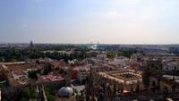 |
| Catedral de Burgos | Burgos | Castilla y León | 1984 | Sí | Construida entre los siglos XIII y XVI. Lugar donde está enterrado El Cíd. | 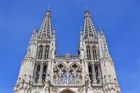 |
| Centro histórico de Córdoba | Córdoba | Andalucía | 1984 | Sí | Incluyendo la Mezquita de Córdoba. | 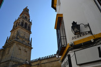 |
| Ciudad Califal de Medina Azahara | Córdoba | Andalucía | 2018 | Sí | - | 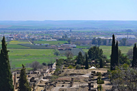 |
| Ciudad histórica de Toledo | Toledo | Castilla-La Mancha | 1986 | Sí | - | 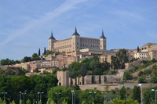 |
| Ciudad histórica fortificada de Cuenca | Cuenca | Castilla-La Mancha | 1996 | Sí | - | 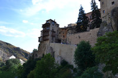 |
| Ciudad vieja de Ávila e iglesias extramuros | Ávila | Castilla y León | 1985 | Sí | Sistema defensivo construido en el siglo XI alrededor de la ciudad original. Se compone de 82 torres y 9 puertas. | 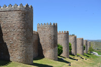 |
| Ciudad vieja de Cáceres | Cáceres | Extremadura | 1986 | Sí | - | 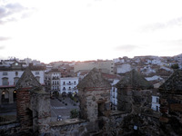 |
| Ciudad vieja de Salamanca | Salamanca | Castilla y León | 1988 | Sí | Ciudad universitaria desde la fundación de la Universidad de Salamanca en 1218, la más antigua de España y de las más antiguas de Europa. | 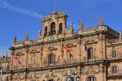 |
| Ciudad vieja de Santiago de Compostela | Santiago de Compostela | Galicia | 1985 | No | La Catedral de Santiago, supuesto lugar de enterramiento del apostol del mismo nombre, y final del trayecto de peregrinaje del Camino de Santiago. | - |
| Ciudad vieja y acueducto de Segovia | Segovia | Castilla y León | 1985 | Sí | El acueducto romano fue construido en el siglo I, el alcázar medieval en el siglo XI y la catedral en el siglo XVI. | 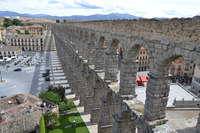 |
| Conjunto arqueológico de Mérida | Mérida | Extremadura | 1993 | No | - | - |
| Conjunto arqueológico de Tarraco | Tarragona | Cataluña | 2000 | No | - | - |
| Conjuntos monumentales renacentistas de Úbeda y Baeza | Provincia de Jaén | Andalucía | 2003 | No | - | - |
| Cueva de Altamira y arte rupestre paleolítico del Norte de España | - | Asturias Cantabria País Vasco |
1985 | No* | * Visitada réplica de la Cueva de Altamira en el Museo Arqueológico Nacional en Madrid. | 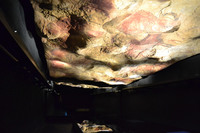 |
| Hayedos primarios de los Cárpatos y otras regiones de Europa | - | Castilla y León | 2017 | No | - | - |
| Ibiza, biodiversidad y cultura | Ibiza | Islas Baleares | 1999 | No | - | - |
| Iglesias románicas catalanas de la Vall de Boí | Vall de Boí | Cataluña | 2000 | No | - | - |
| La Lonja de la Seda de Valencia | Valencia | Comunidad Valenciana | 1996 | No | - | - |
| Las Médulas | Ponferrada | Castilla y León | 1997 | No | - | - |
| Monasterio de Poblet | Vimbodí | Cataluña | 1991 | No | - | - |
| Monasterio y Sitio de El Escorial | San Lorenzo de El Escorial | Comunidad de Madrid | 1984 | No | Uno de los reales sitios, que fue residencia de la familia real. | - |
| Monasterios de San Millán de Yuso y de Suso | San Millán de la Cogolla | La Rioja | 1997 | No | - | - |
| Monumentos de Oviedo y del Reino de Asturias | Oviedo | Asturias | 1985 | No | - | - |
| Muralla romana de Lugo | Lugo | Galicia | 2000 | No | - | - |
| Obras de Antonio Gaudí | Barcelona | Cataluña | 1984 | Sí | - | 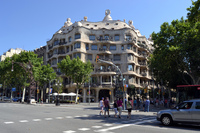 |
| Paisaje cultural de Aranjuez | Aranjuez | Madrid | 2001 | Sí | - | 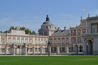 |
| Paisaje cultural de la Serra de Tramuntana | Mallorca | Islas Baleares | 2011 | No | - | - |
| Palau de la Música Catalana y Hospital de Sant Pau | Barcelona | Cataluña | 1997 | Sí | - | 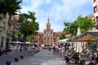 |
| Palmeral de Elche | Elche | Comunidad Valenciana | 2000 | No | - | - |
| Parque Nacional de Doñana | Provincia de Huelva | Andalucía | 1994 | No | - | - |
| Parque Nacional de Garajonay | La Gomera | Islas Canarias | 1986 | No | - | - |
| Parque Nacional del Teide | Tenerife | Islas Canarias | 2007 | No | - | - |
| Patrimonio del mercurio (Almadén e Idrija) | Almadén | Castilla-La Mancha | 2012 | No | - | - |
| Pirineos - Monte Perdido | Provincia de Huesca | Aragón | 1997 | No | - | - |
| Puente de Vizcaya | Portugalete | País Vasco | 2006 | No | - | - |
| Real Monasterio de Santa María de Guadalupe | Guadalupe | Extremadura | 1993 | No | - | - |
| San Cristóbal de La Laguna | San Cristóbal de La Laguna | Islas Canarias | 1999 | No | - | - |
| Sitio de los Dólmenes de Antequera | Antequera | Andalucía | 2016 | No | - | - |
| Sitios de arte rupestre prehistórico del Valle del Côa y de Siega Verde | - | Castilla y León | 1998 | No | - | - |
| Torre de Hércules | A Coruña | Galicia | 2009 | No | - | - |
| Universidad y barrio histórico de Alcalá de Henares | Alcalá de Henares | Comunidad de Madrid | 1998 | Sí | - | 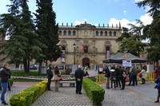 |
| Yacimiento arqueológico de Atapuerca | Atapuerca | Castilla y León | 2000 | No | - | - |
{kind=link}
{kind=link}
{kind=link}
{kind=link}
{kind=link}
{kind=link}
{kind=link}
{kind=link}
{kind=link}
{kind=link}
{kind=link}
{kind=link}
{kind=link}
{kind=link}
{kind=link}
Lo aprendido
Cosas aprendidas y que a lo mejor te sirven a ti también:
- Los museos y otros lugares turísticos suelen cerrar un día de la semana, habitualmente los lunes. Revisar bien los horarios para no llevarse sorpresas desagradables. También muchos cierran un par de horas o incluso más en la hora del almuerzo, lo cual te quita posibilidades si vas justo de tiempo.
- Suele haber franjas horarias o ciertos días en los que la entrada a museos y otros sitios es gratuita o con precio reducido. En el caso del Museo del Prado de 18:00 a 20:00, aunque suele haber una cola muy larga.
- En el caso de España, las personas desempleadas pueden acceder a muchos sitios culturales de forma totalmente gratuita, presentando el PDF en papel de haber renovado la demanda de empleo del INEM. De esta forma puedes entrar totalmente gratis al Museo del Prado, Museo Thyssen y Museo Reina Sofía, por enumerar solo los más destacados.
- En muchos lugares no está permitido hacer fotografías, pregunta siempre antes por cortesía. En el Museo del Prado no está permitido hacer fotos (2016). En algunos sitios permiten hacer fotografías pero sin flash (para no deteriorar las obras), es el caso del Museo Thyssen (2016) o el Museo Arqueológico Nacional (2009).
- Si vas a andar mucho, ya sea por ciudad o campo, conviene llevar bastante agua y algo para protegerse del sol, sobre todo si es verano.
- Llevar anotado el teléfono de la radiotaxi local puede sacarte de algún apuro si te pierdes o vas justo de tiempo para llegar a algún sitio.
- Para preparar tus viajes te puede ser útil consultar sitios como Wikivoyage y Los Viajeros. También es recomendable mirar la previsión del tiempo antes de ir.
- Casi todas las ciudades tienen una oficina de turismo en el centro o próxima a los monumentos principales. Allí podrán informarte mejor y resolver cualquier duda sobre el patrimonio local. También suelen dar mapas gratis.
Me gustaría visitar
Esta es una lista incompleta de los lugares que me gustaría visitar algún día si tuviera oportunidad.
- Mundaneum (Mons, Bélgica)
- Museo del Louvre (París, Francia)
- Roma
- San Petersburgo
| Viajes | |
|---|---|
| Por región | Vuelta a Cádiz · Vuelta a Andalucía · Vuelta a España |
| Por tema | Camino de Santiago · Live cams · Los pueblos más bonitos de España · Turismo Rojo · Bibliografía |
 |
Esta página fue modificada por última vez el 2018-10-04 21:18:40 (UTC) | GitHub pages |